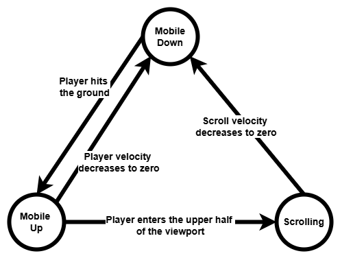
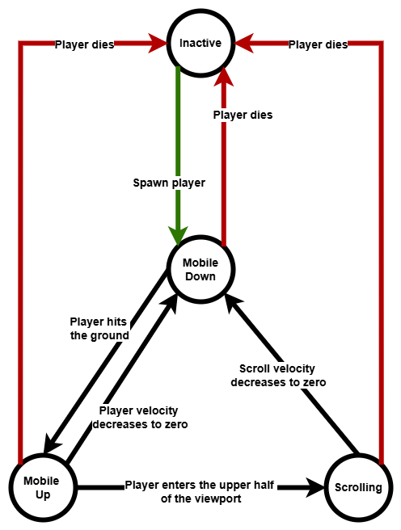
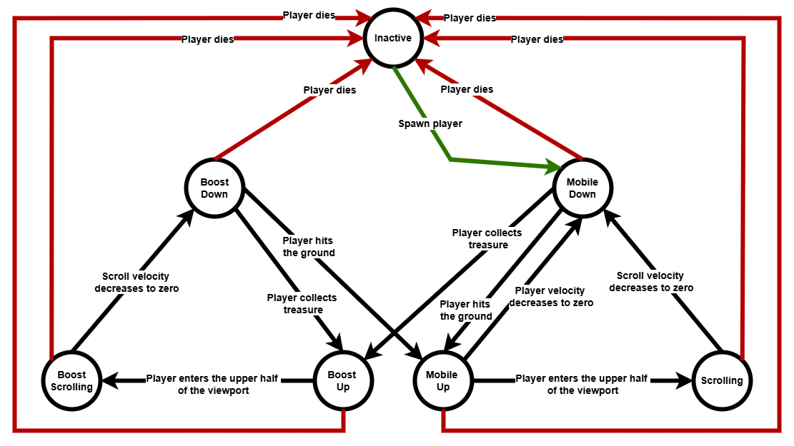

The initial design is using a Gaussian distribution to determine platform placement, with the mean set at the position of the previous platform. The variance is systematically increased through a predefined process to progressively enhance the game’s difficulty over time. Using Box Muller transform to sample from standard gaussian distribution then later shifted and scaled based on the desired mean and variance to fit the intended distribution.
Sampling from a Gaussian distribution can occasionally produce extreme values, causing platforms to spawn outside the viewport.
Values that fall outside the desired range are clipped to the nearest boundary, resulting in an accumulation of probability mass at the edges. This effect becomes particularly noticeable when the previous platform’s position is near the viewport boundary.
If a sampled value falls outside the desired range, it is discarded and a new sample is drawn, repeating the process until a valid sample is obtained. While rejection sampling is straightforward to implement, the sampling process is no longer a constant-time operation.
Use the inverse cumulative distribution function to sample from a truncated Gaussian distribution. Since the Gaussian CDF is intractable, express it in terms of the error function and apply an approximation for efficient computation.
While the truncated Gaussian distribution is effective in mathematical and programming contexts, it tends to generate positions close to the previous platform, which may not be ideal for game design.
To reduce the likelihood of consecutive platforms appearing in the same position, employ a bimodal truncated Gaussian distribution to determine each new platform’s location. The weighting of the two Gaussian components is dynamically adjusted based on the previous platform’s position.
Employs an adaptive Bernoulli trial mechanism to balance the frequency of treasure appearances on platforms. While a simple Bernoulli trial with a fixed success rate could determine treasure spawns, it may lead to clusters of consecutive treasures if the rate is too high, or prolonged absences if too low.
To address this, adjust the success rate dynamically using the convex nature of the exponential function. After a treasure spawns, the probability of another immediate spawn is reduced; conversely, each time no treasure spawns, the probability increases exponentially, ensuring a treasure appears eventually.
To determine the tilt angle from accelerometer data, our game utilizes inverse trigonometric functions to convert raw accelerometer readings into angular measurements.
To reduce unintentional movements, a power function filter is applied by raising the input values to a power > 1 to decrease the impact of minor inputs.
Using a state machine, I initially designed a simple version with only three states.

I then expanded it by adding an additional state to handle scenarios where the player is not in the game, enabling the implementation of a restart function.

Later, I refined the system by merging the newly added states to seamlessly accommodate the player's ability to pick up boosts. Additionally, the structured nature of the state machine makes debugging more manageable.
